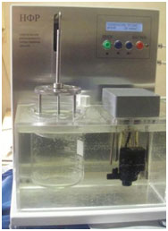
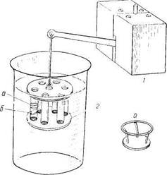
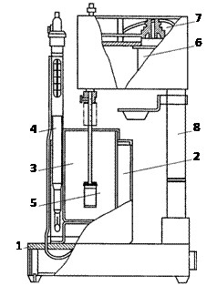
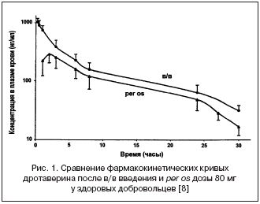
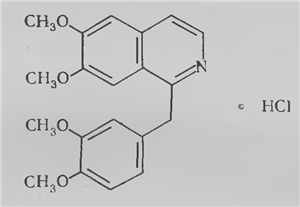

Угу. Вот поэтому периодически старые заглушки и заменяются открывающимися сюжетными кусочками - чтобы не спойлерить уж совсем люто.
Лена-7дл рут
Сообщений 121 страница 150 из 273
Поделиться1212016-07-11 18:31:40
- Вахаха!~

- Откуда: Санкт-Петербург
- Зарегистрирован: 2015-10-21
- Сообщений: 344
- Пол: Мужской
- Последний визит:
Сегодня 16:44:15
Поделиться1222016-07-25 13:37:43
С рандомом в эпилоге выходит, что от действий ГГ фактически мало что зависит. Это во-первых сильно удручает, честно говоря. А во-вторых как-то по логике не идёт. Как же "Каждый получает ту реальность, которую заслуживает"? Вроде сделал всё правильно, и тут здрасьте:(
ПМСМ, смысл рута Лены в том, что ГГ борется с её "маской", которая либо побеждает и утягивает её за собой (бэд энд), либо Семён вытаскивает Лену уже свободную (гуд энд). И вот в этом было, как мне кажется, что-то замечательное, заставляющее задуматься. Может не стоит смешивать это с другими рутами?
Поделиться1232016-07-25 17:53:59
- Ньюфаг

- Зарегистрирован: 2015-11-29
- Сообщений: 12
- Последний визит:
2017-10-08 21:57:15
Читатель должен страдать. Все работает как надо.
Поделиться1242016-07-25 19:35:09
- Мизантроп

- Откуда: Москва / Ташкент
- Зарегистрирован: 2015-10-21
- Сообщений: 890
- Активен
Phoenix1 написал(а):
Как же "Каждый получает ту реальность, которую заслуживает"?
Меня почти что цитируете =).
Почитайте этот тред. В планах изменение метода получения гуда Лены-7ДЛ на независящий от ЛП.
Поделиться1252016-07-25 22:33:34
Gazebo написал(а):
Читатель должен страдать. Все работает как надо.
Ээ, с чего бы это? Датфил получить - это да, надо. А мрачняка в 7ДЛ и без того - сплошь и рядом.
Я вот около года назад впервые прошёл 7ДЛ, и именно за этот самый момент в руте Лены мод мне запомнился, да и до сих пор считаю его (мод) лучшим. За полноту раскрытия всех персонажей и логичность. Сейчас вот решил перечитать с новой версией - лето всё-таки на дворе:) И как-то аж неприятно стало.
Я так понял, такие изменения связаны с рутом ОД. Ну, как вариант, разрешите предложить такое: если есть тру-энд ОД, т.е. игрок уже получил эту концовку, тогда шансы на хорошую Лену понижаются.
Впрочем, автору виднее. В любом случае спасибо за отличный мод!
Поделиться1262016-07-26 07:21:53
- Мизантроп
- Откуда: Москва / Ташкент
- Зарегистрирован: 2015-10-21
- Сообщений: 890
- Активен
Phoenix1 написал(а):
тогда шансы на хорошую Лену понижаются
Напомню, что это ведёт к выбору, а не прямому переходу на концовку. Так что никакие вероятностные шансы не понижаются, только лишь появляется возможность получить ещё одну концовку.
Поделиться1272016-08-03 08:38:30
- Мизантроп
- Откуда: Москва / Ташкент
- Зарегистрирован: 2015-10-21
- Сообщений: 890
- Активен
Ура! Форум отвис, не прошло и суток (к вопросу о переезде со старого форума на новый) - теперь у меня есть возможность изложить то, что хотел ешё со вчерашнего вечера.
Вокруг рандомной смерти в последние дни создалась какая-то совсем нездоровая ситуация на Викии - на то воля тех, кто её создал. Но сейчас я хочу поговорить не о самом рандоме в руте как факте, а о медицинских аспектах самой излагаемой там ситуации. Все эти подробности в силу своей основной специальности я знал всегда, но оставлял тов.Автору право на творческий домысел и фантазию против истинного положения дел.
Заранее приношу извинения у читателей данной "портянки", если излишне буду перебарщивать с терминологией - по возможности, постараюсь её объяснять.
Дабы не возникло сомнений в моей компетенции, упомяну, что моя основная специальность "Химическая технология фармацевтических и косметических средств". Я в своё время именно по таблеткам защитил свой диплом, разрабатывал производственные регламенты именно по производству таблеток и проводил полный технологический цикл их производства (от влажного гранулирования исходной массы, штамповки на таблет-прессе и покрытия оболочкой до заводского контроля качества и упаковки таблеток в блистеры) .
Лена и таблетки
Я напомню, что в руте не приводится точного названия препарата, выпитого Леной. "Средство от головной боли" - этим конкретизация ограничивается. Примем, что в качестве препарата был использован неоднократно упомянутый в рутах дротаверина гидрохлорид (он же "но-шпа").
1. Таблетки, как лекарственная формаВо всём мире, в т.ч. в странах постсоветского пространства, качество производимой фармацевтической продукции регулируется двумя основными типами документов: протоколами GMP (Good Manufacturing Practice) и нормами государственных фармакопей.
Протоколы GMP, например, на территории РФ до сих пор приняты с оговорками (и вступили в действие как правило, а не рекомедация, только с 2014 года), т.к. представляют из себя "драконовские" требования о том, в каких условиях должны производиться лекформы - многие предприятия долгое время не соответствовали требованиям этих протоколов (особенно по части технического полного переоснащения производств). В СССР они распространения не имели.
Государственные фармакопеи по отдельным странам существуют куда больше чем GMP и впервые появились ещё в XVIII веке. Именно они задают общие нормы качества непосредственно продукции, как лекарственной формы (т.е. описывают детально, каким критериям должны соответствовать все таблетки, суспензии, сиропы, мази, капсулы и т.д., в принципе), а также описывают методы анализа фармацевтического сырья.
В нашем родном СССР к 1989 году действовала уже одиннадцатая по счёту фармакопея ГФ-XI (сейчас на Украине и в России приняты обновлённые версии этого документа (ГФУ-II и ГФ-XII), а остальные республики (кроме балтийских - у них евростандарты) продолжают пользоваться именно этой фармакопеей). Так вот, ГФ-XI устанавливает два параметра качества, которые интересуют нас в ситуации отравления Леночки - распадаемость и растворимость таблеток.
Распадаемость таблеток - параметр, показывающий время, за которое таблетка перейдёт из состояния всем знакомого "кругляша" в мелкие раздробленные невидимые глазу частицы при моделировании условий организма (водная среда, температура 37°C, вертикальное возвратно-поступательное перемешивание). Ниже изображена установка для данного вида анализа и её принципиальная схема.


Растворимость таблеток - параметр, показывающий время, за которое вещество таблетки полностью перейдёт в растворённое состояние и не будет наблюдаться даже микроскопических остатков таблетки (условия аналогичны измерению распадаемости, но перемешивание уже ведут лопастной мешалкой). Время растворимости всегда превышает время распадаемости. Ниже также изображена установка для данного вида анализа и её принципиальная схема.

Непосредственно к самой лекарственной форме таблеток параметр всасываемости не относится, т.к. каждый случай отдельного вещества индивидуален. Однако, этот параметр важен для нас, и у него имеются измеренные на практике табличные значения. Настало время перейти от базисных знаний по теме к нашему конкретному случаю.
2. Таблетки но-шпыИтак. Сразу начну с места в карьер и огорошу нормами ГФ-XI.
Согласно регистрационному досье на таблетки "Но-шпа", опубликованному на сайте Государственного реестра лекарственных средств (Ссылка), представляют собой таблетки, непокрытые оболочкой. Для данного случая ГФ-XI устанавливает норматив по распадаемости - не более 15 минут, т.е. уже через 15 минут в условиях организма от этой таблетки точно не останется никакого видимого следа. В случае таблеток, покрытых оболочкой, такой норматив установлен в 30 минут.
Но что мы читаем в руте Лены-7ДЛ? Строки 10135-10136.
Код:me "Не засыпай! {w}Не отключайся, слышишь! {w}Когда таблетки ела?" un "Два часа… или больше."Строки 10127-10128.
Код:"В ладонь ударила горячая струя рвоты." "Было бы противно, если бы не было так жутко – практически чистый желудочный сок, в котором как кружки жира в колбасе мелко-мелко понатыканы белые, полурастворившиеся кружки таблеток."Как вы понимаете, шансов что за 2 часа таблетки доживут видимыми для глаза в условиях желудка просто нет. Кишечнорастворимыми таблетки но-шпы и других средств от головной боли точно не являются (в этом случае они вообще бы не растворились в кислой среде желудка, не вызвав никакого эффекта). Таблетки, превышающие нормы по распадаемости, являются браком и не могут покинуть территории завода никуда кроме как на утилизацию: введение их в оборот - подсудное дело, на которое не пойдёт ни один технолог (прибылей на этом точно не заработать - проще сделать по требованиям ГФ).
Норма по растворимости таблеток согласно ГФ-XI - за 45 минут в испытуемый раствор должно перейти не менее 75% активного вещества таблетки. Т.е. через два часа все принятые таблетки уже давно находятся в растворённой форме, пригодной для всасывания.
Переходим к всасываемости. Фармакокинетическая часть досье на дротаверина гидрохлорид утверждает (Ссылка):
После персистемного метаболизма в системный кровоток поступает 65% принятой дозы дротаверина. Максимальная концентрация в плазме крови достигается через 45-60 минут (Прим.: после приёма).Т.е., переводя с русского на русский, максимум через час таблетки воспроизведут свой максимально возможный эффект, а в дальнейшем терапевтическая концентрация будет только падать согласно фармакокинетической кривой для дротаверина, приведённой ниже (per os - пероральный способ введения, интересующий нас).

Проще говоря, максимальный эффект уже должен был наступить. Но, быть может, шансы хоть какие-то есть?
3. Токсикология но-шпыПерейдём к расчёту сметрельной дозировки дротаверина. В руте сказано следущее (строка 10203):
Код:"Из ослабшей руки выкатился круглый пластмассовый пузырёк. Пустой."По ГРЛС в таком флаконе находится 60 или 100 таблеток по 40 мг дротаверина гидрохлорида. Это позволит рассчитать массу принятого активного вещества.
Итого в двух случах получается 2400 мг и 4000 мг, соответственно. С учётом 65% всасывания получается 1560 мг и 2600 мг, соответственно. Последние цифры показываают содержание но-шпы уже непосредственно в крови нашей суицидницы.
Примем, Лену не очень толстой и зададим её массу, как 55 килограммов. Согласно токсикологической базе данных Национальной Медициской Библиотеки США LD50 у крыс для внутривенного содержания дротаверина гидрохлорида составляет 14,6 мг/кг веса (Источник). Попутно примем, что Леночка - живучая как крыса.
Совсем забыл сказать, что LD50 (lethal dose 50) - смертельная дозировка препарата, при которой гибнет 50% испытуемых животных.
Итак, на один килограмм веса Лены приходится 28,36 мг и 42,27 мг дротаверина, что превышает LD50 для крыс в 1,94 и 2,90 раза.
Как и прочие зависимости в мире природы, уменьшение выживаемости от увеличения концентрации является экспоненциальной зависимостью. Зная, превышение LD50 мы можем высчитать шансы Лены к выживанию.
Как вы видите, шансы Лены к выживанию далеко не 50 на 50, а 26,5% (в случае 60 таблеток) и 13,5% (в случае 100 таблеток).
4. Выводы1. В желудке Лены спустя 2 часа после приёма таблеток быть уже не может.
2. Максимальное действие препарата наступает спустя 1 час после приёма. Через 2 часа всё худшее уже произошло.
3. Шансы выжить у Лены не более 26,5%.Надеюсь, этот материал был хоть сколько-то интересным, и вы поняли насколько гротескна ситуация с суицидальной попыткой Лены в её 7ДЛ-руте. И да, шанс на чудо в данном конкретном случае вполне можно рассчитать.
Отредактировано Dantiras (2016-08-03 08:55:50)
Поделиться1282016-08-03 09:05:49
- Ньюфаг

- Зарегистрирован: 2016-04-01
- Сообщений: 12
- Последний визит:
2016-10-06 23:37:18
Товарищ вы гений даже простому электрику все понятно и просто разъяснено. Жалко Лену. Последствия от такой дозы какие если выживешь?
Эту ношпу без рецепта можно достать?
Отредактировано Cev196 (2016-08-03 09:07:05)
Поделиться1292016-08-03 09:15:06
- Мизантроп
- Откуда: Москва / Ташкент
- Зарегистрирован: 2015-10-21
- Сообщений: 890
- Активен
Cev196 написал(а):
Эту ношпу без рецепта можно достать?
Да, конечно. Она входит в перечень ЖНВЛП (Жизненно необходимые и важнейшие лекарственные препараты) и должна продавться в каждой аптеке.
Cev196 написал(а):
Последствия от такой дозы какие если выживешь?
Паралич отдельных конечностей и нарушения функции мимических мышц возможны. Также возможно появление тахикардии и расстройств гладкой мускулатуры мочевого пузыря и кишечника (недержание мочи и кала).
P.S. Вы всё ещё хотите жить с такой Леночкой?
Отредактировано Dantiras (2016-08-03 09:18:55)
Поделиться1302016-08-03 09:32:25
- Одиночка

- Зарегистрирован: 2015-10-25
- Сообщений: 98
- Последний визит:
2018-04-13 03:09:01
Dantiras написал(а):
Да, конечно. Она входит в перечень ЖНВЛП (Жизненно необходимые и важнейшие лекарственные препараты) и должна продавться в каждой аптеке.
Паралич отдельных конечностей и нарушения функции мимических мышц возможны. Также возможно появление тахикардии и расстройств гладкой мускулатуры мочевого пузыря и кишечника (недержание мочи и кала).
P.S. Вы всё ещё хотите жить с такой Леночкой?
Отредактировано Dantiras (Сегодня 10:18:55)
Хм значит в тексте надо изменить время через которое Семен прибегает? Потому что то время которое есть сейчас в реальности скорее всего убило бы Лену, а если бы и не убило то так покоробило, что она скорее всего не смогла бы нормально жить.
Слушай Дант а эти параличи и т.д. они больше зависят от количества съеденных таблеток или о времени все же можно что-то изменить? То есть понятно что чем больше таблеток тем хуже, но в нашем случае получается какое время оптимально для того чтобы спасти Лену?
Поделиться1312016-08-03 09:39:16
- Мизантроп
- Откуда: Москва / Ташкент
- Зарегистрирован: 2015-10-21
- Сообщений: 890
- Активен
Red cap написал(а):
но в нашем случае получается какое время оптимально для того чтобы спасти Лену?
Минут 30, не больше. Именно тогда начинается всасывание в кровь и промывание желудка действительно спасёт ситуацию. Да и как раз после него всосавшееся вызовет Леночкины симптомы отключения сознания и раскривую улыбку.
Поделиться1322016-08-03 12:01:34
- Вахаха!~
- Откуда: Санкт-Петербург
- Зарегистрирован: 2015-10-21
- Сообщений: 344
- Пол: Мужской
- Последний визит:
Сегодня 16:44:15
Товарищ Дантирас, про сроки и побочки я и сам немного в курсе. Но там скорее речь про снотворное (изуверская медицина, барбитураты) шла, потому как после ношпы морда лица может онеметь настолько, что никакими пощёчинами не достучишься.
Ну и для снотворного сроки немного отличаются. (=
средство от головной боли
вообще отсылка к д3 и сценке после игры в карты (=
Хотя не спорю, срок в два часа сильно затянут - но это полностью демонстрирует толстокожую натуру Семёна. Девочка чахла, сохла, а мальчик спал себе. Ай, молодец. 
Поделиться1332016-08-03 17:51:56
- Ньюфаг
- Зарегистрирован: 2016-04-01
- Сообщений: 12
- Последний визит:
2016-10-06 23:37:18
Dantiras написал(а):
Да, конечно. Она входит в перечень ЖНВЛП (Жизненно необходимые и важнейшие лекарственные препараты) и должна продавться в каждой аптеке.
Паралич отдельных конечностей и нарушения функции мимических мышц возможны. Также возможно появление тахикардии и расстройств гладкой мускулатуры мочевого пузыря и кишечника (недержание мочи и кала).
P.S. Вы всё ещё хотите жить с такой Леночкой?
Отредактировано Dantiras (Сегодня 09:18:55)
да хотел бы. Ибо сам виноват что довел девушку до таково.
Насчет но-шпы она еще продается? Именно снотворное, а не пищевая.
Отредактировано Cev196 (2016-08-03 18:39:33)
Поделиться1342016-08-03 18:39:25
- Мизантроп
- Откуда: Москва / Ташкент
- Зарегистрирован: 2015-10-21
- Сообщений: 890
- Активен
7dl-kun написал(а):
Ну и для снотворного сроки немного отличаются. (=
Как и вообще для любого препарата. =)
Вот только таблетки через 2 часа всё равно в рвоте не обнаружатся - растворимость и распадаемость контролю подлежат регулярно и нормы по всем таблеткам едины (15 или 30 минут для распадаемости и 75% растворимости за 45 минут). Я ни в чём не обвиняю и даже менять не призываю - всего-то высказываю мнение человека, знакомого с отраслью не понаслышке, и просвещаю массы.
FTGJ, я сделаю пересчёт для транквилизаторов.
Транквилизаторы и иже с ними
Детально описывать метод расчёта не буду - он уже приведён в посте выше.
В качестве снотворных средств или чего-то подобного выбираю распространённые в СССР таблетированные препараты:
1. Фенобарбитал (содержится в "Корвалоле", "Валокардине", но также продавался в чистом виде под именем "люминал" - сейчас внесён в перечень наркотических средств (хотя корвалол по-прежнему в продаже));
2. Валидол (он же ментил изовалерианат, препарат с седативным действием);
3. Феназепам (из всей громадной группы бензадиазепинов возьму его одного - эффекты будут сходными);
4. Димедрол (не транквилизатор, но с близким к транквилизаторам по механизму действием - плюс, точно был в любом медучреждении на территории Союза ССР).Примечание: как таковые "пузырьки" с таблетками довольно редки на практике и обычно производятся именно зарубежными фирмами. Потому при отсутствии упаковки таблеток во флакон в расчёт брались две "облатки" по 10 таблеток (два блистера), как часть стандартной упаковки во вторичную картонную упаковку. Кроме того, подкрутим биодоступность до 100% - для ухудшения эффекта (заодно это поправит расчёт, если Леночка употребила больше, чем указанное число таблеток).
Препарат
Форма выпуска
Таблеток в упаковке, шт.
Масса активного вещества во всех таблетках, мг
Всасываемость препарата в плазму крови, %
Масса активного вещества в плазме крови, мг
LD50 крысы/перорально, мг/кг
Доза на 1 кг веса Леночки, мг/кг
Соотношение Доза/LD50, %
Выживаемость, %
Время достижения максимальной концентрации в плазме крови, мин.
Фенобарбитал
Таблетки, непокрытые оболочкой, 100 мг
20
2000
50
1000
162
18,2
11,2
92,5
60 - 120
Валидол
Таблетки, непокрытые оболочкой, 60 мг
20
1200
60
720
более 5000
13,1
0,26
99,8
120 - 150
Феназепам
Таблетки, непокрытые оболочкой, 2,5 мг
50
125
16,7
20,9
2400
0,38
0,02
99,985
60 - 120
Димедрол
Таблетки, непокрытые оболочкой, 50 мг
20
1000
98
980
390
17,8
4,6
96,9
60 - 120
Проще говоря, какую экзотику (для пионерлагеря) Вы, тов.Автор, в аптечку доктора Виолы засунули? Леночке жить и жить с обыкновенными препаратами, даже если она по три расчётные дозы каждого съест (хотя трип будет тот ещё - все околонаркотического или наркотического действия). =)
P.S.а вот и наглый способ обойти рандом - выбор же решает! Вот Леночка и выбирает.
Поделиться1352016-08-03 18:48:30
- Ньюфаг
- Зарегистрирован: 2016-04-01
- Сообщений: 12
- Последний визит:
2016-10-06 23:37:18
Dantiras написал(а):
Как и вообще для любого препарата. =)
Вот только таблетки через 2 часа всё равно в рвоте не обнаружатся - растворимость и распадаемость контролю подлежат регулярно и нормы по всем таблеткам едины (15 или 30 минут для распадаемости и 75% растворимости за 45 минут). Я ни в чём не обвиняю и даже менять не призываю - всего-то высказываю мнение человека, знакомого с отраслью не понаслышке, и просвещаю массы.
FTGJ, я сделаю пересчёт для транквилизаторов.
ПППЦ может при гуд эндинге до этого просто не доходит? А при бэд сам знаете. Ну зато у вас способ цивильный.
Поделиться1362016-08-03 19:14:40
- Мизантроп
- Откуда: Москва / Ташкент
- Зарегистрирован: 2015-10-21
- Сообщений: 890
- Активен
Cev196 написал(а):
Насчет но-шпы она еще продается? Именно снотворное а не пищевая.
Рассказываю один маленький секрет.
Дротаверин и папаверин
Красавцу с формулки ниже - дротаверину гидрохлориду aka "но-шпа" - глубоко безразлично, как именно его используют. Эффект у него всегда одинаков при одинаковой концентрации.
Повторяю ещё раз, "Но-шпа" - не снотворное и никаким седативным действием не обладает. Этот препарат - спазмолитик, т.е. грубо говоря, глушит боль, в частности головную или зубную. Ему нет разницы какую боль глушить (хоть менструальную) - он неспецифический спазмолитик.
И вновь, "но-шпа" не просто продаётся - она по-хорошему обязана продавться в любом месте, на котором написано "Аптека".
У но-шпы есть старший брат с аналогичным действием - папаверина гидрохлорид.
Вот он уже может продавться не всюду, т.к. не включён в перечень ЖНВЛП (банально может не оказаться в аптеке). Но и у него никаких ограничений к продаже нет.
Если бы Лена употребила любой из этих препаратов в сочетании с алкоголем, то всасываемость и эффективность можно было бы повышать почти до 100% (а может и выше, точно не скажу есть ли у них синергия). Как следствие вероятность смерти также резко бы скакнула вверх.Кстати, и папаверин, и дротаверин относятся к изохинолиновым алколоидам. Папаверин впервые был выделен из опийного мака (собственно, Papaver - латинское название мака). К другим изохинолиновым алкалоидам относятся - морфин, героин, кодеин и т.д. (как понимаете, сырьё у них точно такое же, как и у папаверина)

RedCap написал(а):
они больше зависят от количества съеденных таблеток или о времени все же можно что-то изменить?
Cпешил утром и не ответил целиком на вопрос.
Зависит и от количества, и от времени. Сказки про антидоты тут не работают - ГГ не найдёт самостоятельно специфический антагонист конкретного препарата (который может и вовсе лекарством не являться и отсутствовать в аптечке). А применять неспецифический антагонист, т.е. способный забить собой рецепторы, ответственные за принятие рассматриваемого препарата - всё равно, что употреблять кофеин с алкоголем (только значительно-значительно хуже и без последствий всё равно не обойдётся).
Потому рвота - почти всё, что он может сделать. Ну ещё раве что активированного угля в закуску потом таблеток 30 дать (всё содержимое желудка всё равно не промыть).
Поделиться1372016-08-03 21:54:46
- Ньюфаг
- Зарегистрирован: 2016-04-01
- Сообщений: 12
- Последний визит:
2016-10-06 23:37:18
то есть при передозировки ношпой ты уснешь как при отравлении снотворным? А будет больно?
Поделиться1382016-08-03 22:55:05
- Одиночка
- Зарегистрирован: 2015-10-25
- Сообщений: 98
- Последний визит:
2018-04-13 03:09:01
Cev196 написал(а):
то есть при передозировки ношпой ты уснешь как при отравлении снотворным? А будет больно?
Товарищ вы по моему выпытываете из товарища Данта уже не столь важную информацию. Смысл все таки момента в эмоциональном всплеске переживаний, а не в точных диагнозах, того что ждет отравившегося человека.
Поделиться1392016-08-03 23:02:51
- Ньюфаг
- Зарегистрирован: 2016-04-01
- Сообщений: 12
- Последний визит:
2016-10-06 23:37:18
Red cap написал(а):
Товарищ вы по моему выпытываете из товарища Данта уже не столь важную информацию. Смысл все таки момента в эмоциональном всплеске переживаний, а не в точных диагнозах, того что ждет отравившегося человека.
Вполне возможно просто интересно. А насчет эмоциональных переживаний я не могу понять зачем при большом количестве лп и соответственно гуд руте заставлять Лену глотать таблетки если все хорошо. Ато нынешняя отговорка у всех персонажей одинакова даже. Дрыщ да возможно и засомневался и забоялся что отношения могут деградировать до этого. Локи с его глубокой влюбленность не обратил бы факт на это. За Герка не проходил не знаю. Лучше как в ванильке осталось либо все хорошо либо, все очень плохо. Но мне понравилось как герой при бэд энде говорит что он просто закончился.
Поделиться1402016-08-03 23:09:49
- Одиночка
- Зарегистрирован: 2015-10-25
- Сообщений: 98
- Последний визит:
2018-04-13 03:09:01
Cev196 написал(а):
Вполне возможно просто интересно. А насчет эмоциональных переживаний я не могу понять зачем при большом количестве лп и соответственно гуд руте заставлять Лену глотать таблетки если все хорошо. Ато нынешняя отговорка у всех персонажей одинакова даже. Дрыщ да возможно и засомневался и забоялся что отношения могут деградировать до этого. Локи с его глубокой влюбленность не обратил бы факт на это. За Герка не проходил не знаю. Лучше как в ванильке осталось либо все хорошо либо, все очень плохо. Но мне понравилось как герой при бэд энде говорит что он просто закончился.
Ну если все идет на хорошую концовку, это же не значит, что автоматом все должно быть очень хорошо. Жизнь не раз доказывает, что в отношениях, даже в те моменты, когда всё кажется идеальным, всё равно может вылезти какая-то фигня и из малюсенькой проблемы превратится в слона буквально за секунды. Я не говорю конечно про такие крайности, как самоубийство, но и такую ситуацию нельзя назвать какой-то не уместной или не вписывающейся в общую канву повествования.
Поделиться1412016-08-03 23:27:37
- Ньюфаг
- Зарегистрирован: 2016-04-01
- Сообщений: 12
- Последний визит:
2016-10-06 23:37:18
Red cap написал(а):
Ну если все идет на хорошую концовку, это же не значит, что автоматом все должно быть очень хорошо. Жизнь не раз доказывает, что в отношениях, даже в те моменты, когда всё кажется идеальным, всё равно может вылезти какая-то фигня и из малюсенькой проблемы превратится в слона буквально за секунды. Я не говорю конечно про такие крайности, как самоубийство, но и такую ситуацию нельзя назвать какой-то не уместной или не вписывающейся в общую канву повествования.
возможно вы и правы. Я наверное максималист. Но так ведь и можно сделать что в гуде все решается на месте, а в бэд наоборот герой выходит чтоб все обдумать и приходит и видит страшное. Как идея?
Поделиться1422016-08-03 23:33:40
- Одиночка
- Зарегистрирован: 2015-10-25
- Сообщений: 98
- Последний визит:
2018-04-13 03:09:01
Cev196 написал(а):
возможно вы и правы. Я наверное максималист. Но так ведь и можно сделать что в гуде все решается на месте, а в бэд наоборот герой выходит чтоб все обдумать и приходит и видит страшное. Как идея?
Тогда все равно момент станет не столь запоминающимся. Да и врят ли такой текст будет переписан ради одного момента. Хотя автор говорил, что он не в восторге от Лена-7дл ветки и хотел бы её переписать чуть ли не полностью. Но и то что имеем вполне неплохо смотрится.
Поделиться1432016-08-04 03:39:51
- Одиночка

- Зарегистрирован: 2016-01-02
- Сообщений: 90
- Последний визит:
2018-02-06 22:25:09
Dantiras написал(а):
60 или 100 таблеток по 40 мг
Пионеров в лагере много, нам неизвестно насколько пуст флакончик был изначально.
Поделиться1442016-08-04 08:37:36
- Вахаха!~
- Откуда: Санкт-Петербург
- Зарегистрирован: 2015-10-21
- Сообщений: 344
- Пол: Мужской
- Последний визит:
Сегодня 16:44:15
Но в целом посыл скорее был о таблетках в желудке. Точнее, об их отсутствии в содержимом желудка через два часа. Он справедлив.
Хотя можно искусственно остановить его работу, выработку ферментов, в этом случае скорость растворения ощутимо падает после перенасыщения раствора. И жрать таблетки не чохом, а в несколько присестов. И догоняться водкой из медпункта. Вообще, есть в сети пара инструкций на этот счёт - как выиграть чуть-чуть времени, но лишить спасителя почти всех шансов.
Поделиться1452016-08-04 11:20:28
- Хикикомори

- Зарегистрирован: 2015-10-21
- Сообщений: 142
- Пол: Мужской
- Последний визит:
2018-04-15 22:31:52
Cev196 написал(а):
я не могу понять зачем при большом количестве лп и соответственно гуд руте заставлять Лену глотать таблетки если все хорошо
Эм. Вы рут читали? Там очень хорошо описан загон ленточки, которому Сеня хорошо так потворствует. А рут Ольги читали, где раскрываются некоторые подробности ленточкиной любови?
Поделиться1462016-08-04 12:07:01
- Ньюфаг
- Зарегистрирован: 2016-04-01
- Сообщений: 12
- Последний визит:
2016-10-06 23:37:18
Элдхэнн написал(а):
Эм. Вы рут читали? Там очень хорошо описан загон ленточки, которому Сеня хорошо так потворствует. А рут Ольги читали, где раскрываются некоторые подробности ленточкиной любови?
да. Знаю что прошлые их отношения закончились разрывом. Рут Ольги не читал не понимаю как при такой разнице в возрастах можно так сказать строить отношения это ненормально. 2-3 года разницы еще куда ни шло.
Поделиться1472016-08-04 15:02:41
- Вахаха!~
- Откуда: Санкт-Петербург
- Зарегистрирован: 2015-10-21
- Сообщений: 344
- Пол: Мужской
- Последний визит:
Сегодня 16:44:15
Какая разница в возрасте? Ты о чём. Семёну 28, Ольге 25.
Поделиться1482016-08-04 15:53:32
- Ньюфаг
- Зарегистрирован: 2016-04-01
- Сообщений: 12
- Последний визит:
2016-10-06 23:37:18
7dl-kun написал(а):
Какая разница в возрасте? Ты о чём. Семёну 28, Ольге 25.
Если так считать то да. А если в совенке то Семену 17 как бы. И если он остается в СССР то разница в возрасте 8 лет получается.
Отредактировано Cev196 (2016-08-04 15:54:14)
Поделиться1492016-08-04 16:36:33
- Вахаха!~
- Откуда: Санкт-Петербург
- Зарегистрирован: 2015-10-21
- Сообщений: 344
- Пол: Мужской
- Последний визит:
Сегодня 16:44:15
Нет, не получается. Ты почитай, сам всё поймёшь.
Поделиться1502016-08-04 17:44:48
- Ньюфаг
- Зарегистрирован: 2016-04-01
- Сообщений: 12
- Последний визит:
2016-10-06 23:37:18
7dl-kun написал(а):
Нет, не получается. Ты почитай, сам всё поймёшь.
Хорошо займусь чтением рута. Надеюсь другие Лена руты тоже хорошими будут.
Отредактировано Cev196 (2016-08-04 17:45:22)